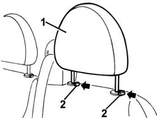

7045B34 central front seat head restraint - r r
- Path
- Procedures > 70 FITTINGS > 7045 FRONT SEATS > 7045B front seat head restraint/arm rest > 7045B34 central front seat head restraint - r r
- Kind
- repair procedure (removal / refitting; the operation number is the code)
- Applies to
- all engines; all production periods
- Interactive page
- https://sloeber94.github.io/elrnDB-fMltpl/en/#/2892238
Applies to: all engines; all production periods
 Removing
Removing
 Refitting
Refitting1. Raise the head restraint to the limit of its travel.
2. Press the retainers and at the same time take out the head restraint.

Applies to: all engines; all production periods
Refitting
RemovingCheck that the head restraint is undamaged.
Refit the head restraint fully home in its seating.
Press the retainers and at the same time lower the head restraint.